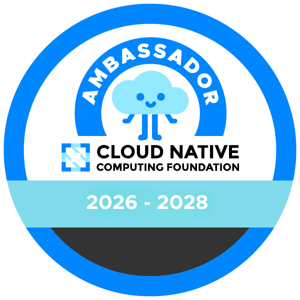
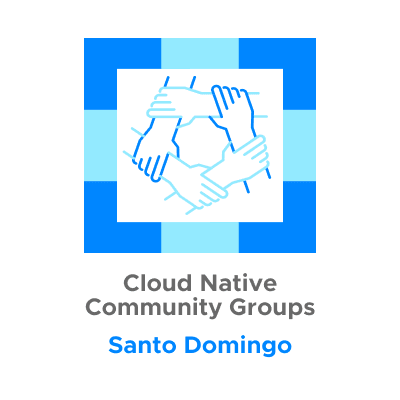

Christopher Tineo
SRE · Palantir Technologies

CNCF Ambassador Kubestronaut
Kubestronaut
GCP Cloud Architect
GCP Cloud DevOps
 CKS
CKS
 MCPA
MCPA




Anthropic · Project Glasswing
75 of the 530 high/critical bugs reported to OSS projects patched at the time of writing